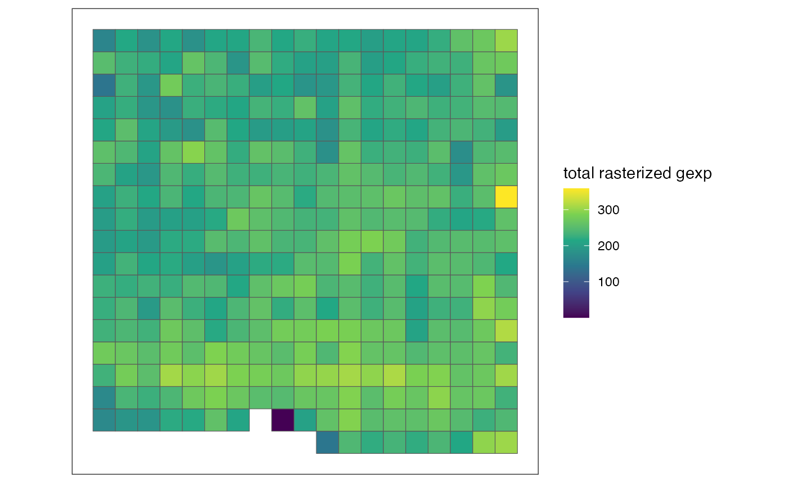
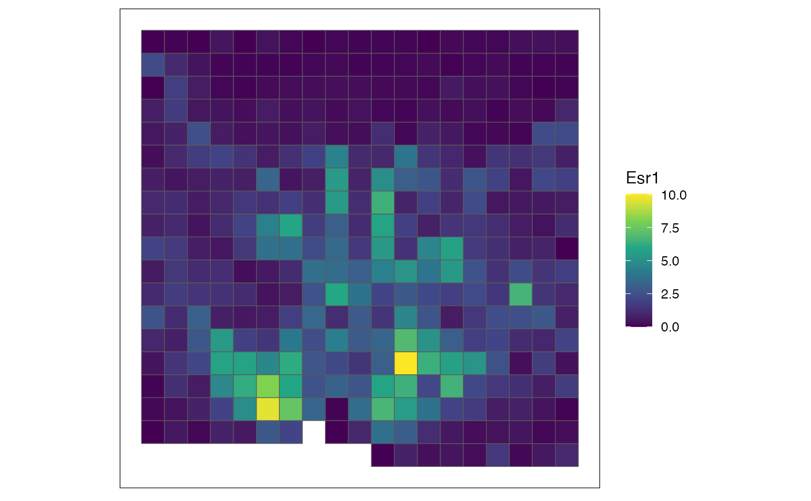
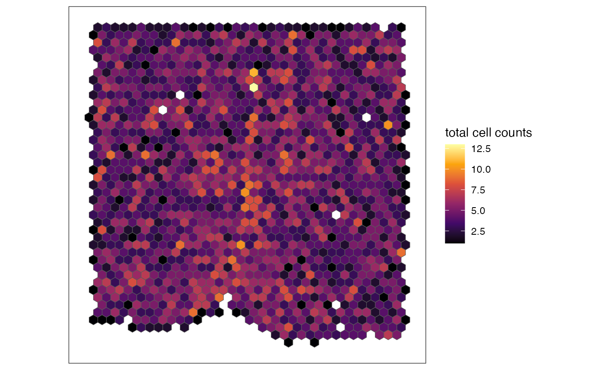
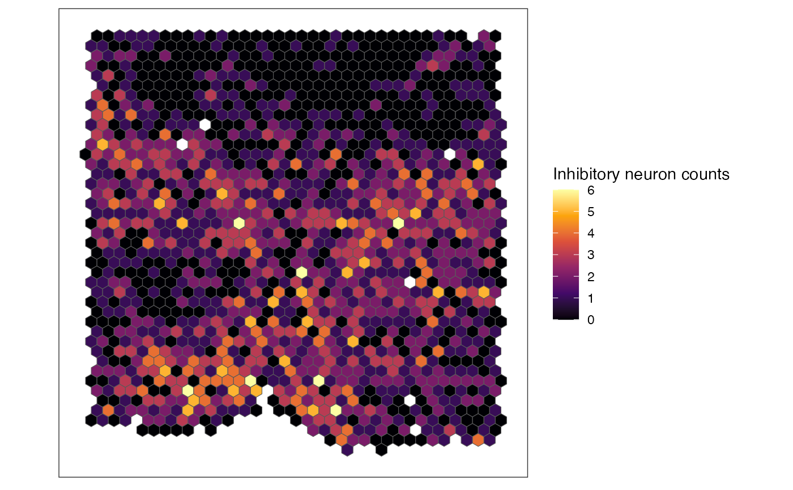

Function based on ggplot2::geom_tile to visualize a rasterized spatial omics dataset represented as a SpatialExperiment object.
Usage
plotRaster(
input,
assay_name = NULL,
feature_name = "sum",
factor_levels = NULL,
showLegend = TRUE,
plotTitle = NULL,
showAxis = FALSE,
...
)Arguments
- input
SpatialExperiment: Input data represented as aSpatialExperiment. The givenSpatialExperimentis assumed to have anassayslot containing a features-by-observations matrix asdgCmatrixormatrixand acolDataslot containingsfc_POLYGONgeometry of pixels. The features-by-observations matrix is assumed to have either genes or cell types as features and pixels as observations.- assay_name
character: Name of the assay slot of the input that you want to visualize. If no argument is given, the first assay of the input would be visualized. This argument is useful when you have multiple assays stored in the input, and you want to visualize a specific assay. Default is NULL.- feature_name
character: Name of the feature in the input that you want to visualize. This argument is useful when you want to specify a feature you want to visualize. You can also use "sum" to visualize sum of all feature values per observation or "mean" to visualize mean of all feature values per observation. Default is "sum".- factor_levels
characterornumericorfactor: An optional vector to convert and plot the input data asfactor. This argument is useful if you want to plot categorical/ordinal variables, such as binarized occurrence of a specific cell type.factor_levelsis fed intolevelsargument of thefactorfunction in base R. Default is NULL.- showLegend
logical: Boolean to show the legend. Default is TRUE.- plotTitle
character: An optional argument to add a title to the resulting plot. Default is NULL.- showAxis
logical: Boolean to show axis title, texts, and ticks. Default is FALSE.- ...
Additional parameters to pass to
ggplot2::scale_fill_viridis_cif no argument is provided tofactor_levelsorggplot2::scale_fill_viridis_dif a vector is provided tofactor_levels. If you wish to use other color maps, we recommend overriding the resultingggplotobject.
Value
The output is returned as a ggplot object, where the input is
visualized as ggplot2::geom_sf. Each pixel is plotted based on sfc_POLYGON
geometry stored in the colData slot. Coloring of pixel represent the corresponding
values of summarized (sum or mean) or specific feature (e.g. rasterized gene expression)
per observation (pixel).
Examples
data("merfish_mousePOA")
# rasterize gene expression
out <- rasterizeGeneExpression(merfish_mousePOA, assay_name = "volnorm", fun = "mean")
# plot total rasterized gene expression per pixel (there is only one assay_name in out and default for feature_name argument is "sum"; therefore, these arguments are not specified)
plotRaster(out, name = "total rasterized gexp")
#> Coordinate system already present. Adding new coordinate system, which will
#> replace the existing one.

# plot rasterized expression of a specific gene/feature per pixel
plotRaster(out, feature_name = "Esr1", name = "Esr1")
#> Coordinate system already present. Adding new coordinate system, which will
#> replace the existing one.

# rasterize cell-type labels with user-defined resolution and hexagonal pixels
out <- rasterizeCellType(merfish_mousePOA, col_name = "celltype", resolution = 50, square = FALSE, fun = "sum")
# plot total cell counts per pixel (there is only one assay_name in out and default for feature_name argument is "sum"; therefore, these arguments are not specified)
# here, let's use additional parameters for ggplot2::scale_fill_viridis_c so that it would have a different color scheme from gene expression plots
plotRaster(out, name = "total cell counts", option = "inferno")
#> Coordinate system already present. Adding new coordinate system, which will
#> replace the existing one.

# plot specific cell type's cell counts per pixel
plotRaster(out, feature_name = "Inhibitory", name = "Inhibitory neuron counts", option = "inferno")
#> Coordinate system already present. Adding new coordinate system, which will
#> replace the existing one.
